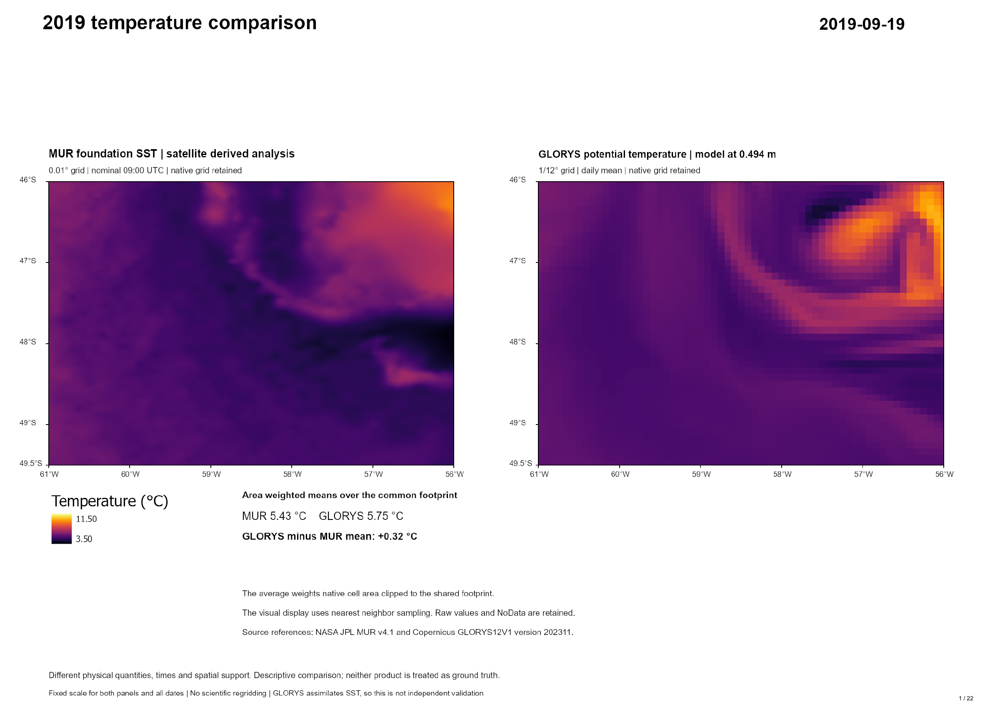
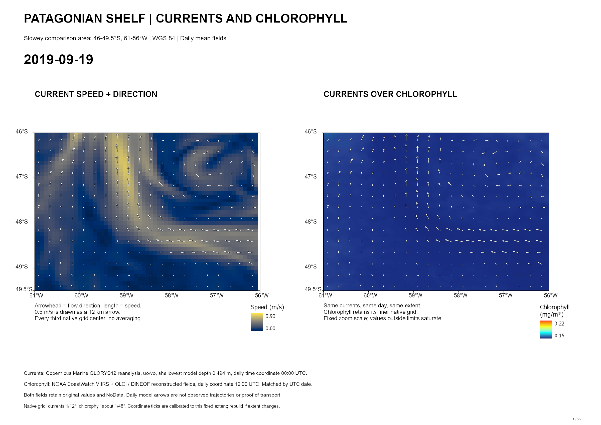
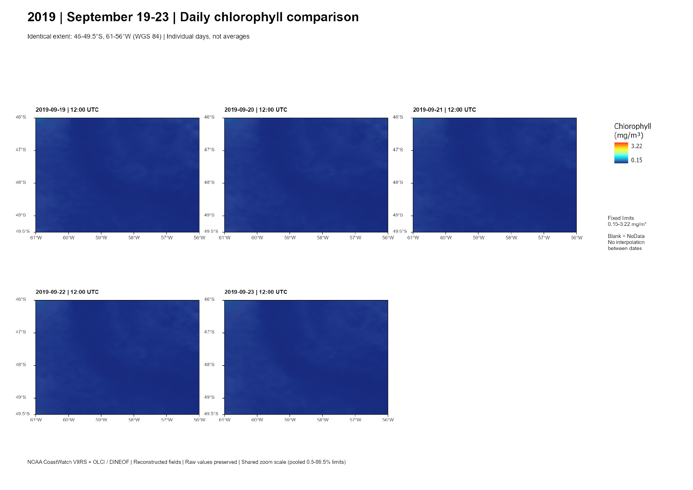

Daily scientific records
NOAA reconstructed chlorophyll, Copernicus currents and selected NASA MUR temperature dates.
Slowey oceanography research / Fall 2026 / Ongoing
I prepare daily oceanographic datasets and map sequences for research with Dr. Slowey, connecting reproducible GIS processing with an ongoing literature review.



NOAA reconstructed chlorophyll, Copernicus currents and selected NASA MUR temperature dates.
Python/ArcPy conversion, native-value and georeferencing checks, fixed map scales and dated layouts.
Long-record visualizations, 22-date comparison atlases and a literature framework for the next analysis.
Where do chlorophyll-a hotspots recur along the southwestern South Atlantic margin, and how do their seasonal patterns relate to temperature gradients and bathymetric setting? The class analysis covers 2018–2024 within 70–45° W and 55–30° S. The related Slowey visualizations extend beyond that class period into 2026.
The region spans the Río de la Plata, Argentine and Patagonian shelves and waters north of the Falkland Islands. Whale habitat motivates the question; the planned analysis does not contain whale observations or direct prey measurements.
I developed the Codex-assisted Python/ArcPy acquisition, conversion, checking and visualization workflow under my oversight, organized the review deliverables, and prepared requested map comparisons. The research records retain raw values, missing dates, product revisions, legends and methods rather than treating a movie as a scientific result.
For the connected GEOG 434 paper, I work with Jose Montelongo, Lakshya Verma and Oscar Matta. Literature synthesis and interpretation remain shared work in progress.
The current writing foundation is a revised outline and an eleven-paper annotated bibliography, supported by an October 19 team literature handoff. This is draft material: the full-text evidence matrix and thematic synthesis are still to be completed.
The planned synthesis compares seasonal timing, frontal and bathymetric settings, nutrient supply, biological controls and retrieval uncertainty. It will establish literature-based expectations before comparison with our mapped data.
Read the literature-review draft excerpt ↗Regional papers on shelf fronts, wind-driven upwelling, seasonal chlorophyll and freshwater influence help distinguish mechanisms across the margin. The bibliography includes Acha et al. (2004), Carranza et al. (2017), Romero et al. (2006), and other regional work; the downloadable draft retains the complete citations and existing annotations.
Planned analysis includes monthly and austral seasonal composites, hotspot persistence and comparisons with fronts and bathymetry. Thresholds, valid-coverage rules and a named bathymetric release remain decisions to document. The existing outline is not a completed systematic review, and no completed causal or trend result is claimed.
The class chlorophyll archive contains 2,553 available dates of 2,557 calendar dates in 2018–2024, with four explicit gaps. The original Slowey chlorophyll movie ends September 15, 2026; a later additive archive has 3,184 available dates through October 6. These revisions are distinct.
The completed currents series spans 3,187 dates from January 1, 2018 through September 22, 2026. Its updated chlorophyll overlay retains ten missing-chlorophyll notices. The 22-date 2019 pilot compares chlorophyll, currents and temperature for the requested windows. Full continuous temperature acquisition remains pending source selection.
The completion record documents recovery from a video color-conversion failure without relaxing the acceptance criteria: the final overlay uses lossless RGB WebM. This portfolio uses still figures from the saved atlases; it does not rerun the research pipeline.
DINEOF chlorophyll is reconstructed, GLORYS is modeled reanalysis, and MUR is a merged/interpolated foundation-temperature analysis. Grid spacing is not effective observing resolution. Daily calendar pairings are not simultaneous observations; GLORYS assimilates sea-surface temperature, so the MUR comparison is not independent validation.
Literature synthesis, seasonal/hotspot statistics, final bathymetric alignment and the class paper remain ongoing. Existing movies and maps establish processing and display capability, not hotspot persistence, whale occurrence or a causal mechanism.
Source: original research handoff, map atlases, working outline and completion records current through October 19–20, 2026. Scientific figures preserve their provider credits. Source research folders were read only during this portfolio update.